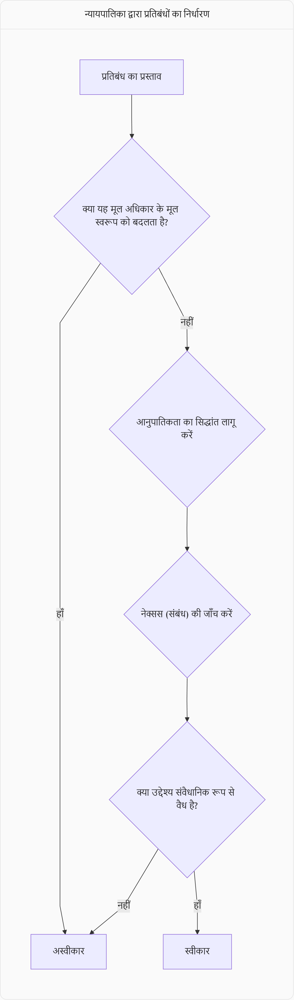

व्यक्तिगत स्वतंत्रता का अर्थ
प्रारंभिक अनुभव
स्वतंत्रता की पहली स्मृति अक्सर स्कूल की छुट्टी या घर से बाहर निकलने की भावना से जुड़ी होती है। यह वह क्षण होता है जब हमें पहली बार अपने निर्णय लेने का अहसास होता है।
पतंग का रूपक
पतंग का रूपक स्वतंत्रता को समझने का एक गहरा प्रतीक है, जिसमें ऊँचाई पर उड़ना डोर से बंधे होने के कारण ही संभव है। डोर का कटना पूर्ण स्वतंत्रता नहीं, बल्कि अलगाव है।
आत्मिक मुक्ति
व्यक्तिगत रूप से, स्वतंत्रता का सबसे बड़ा अर्थ अनावश्यक महत्वाकांक्षाओं से मुक्त होना है, जो मन को परेशान करती हैं और जीवन को बांधती हैं। यह आंतरिक शांति और संतोष की खोज है।
पुरुषों के लिए स्वतंत्रता
आधुनिक समाज में पुरुषों के लिए स्वतंत्रता के दो अतिरिक्त आयाम हैं: स्वयं को केंद्र में मानने की भावना से मुक्त होना और उन परतों से मुक्त होना जो उन्हें रोने से रोकती हैं।
पुरुषों को यह समझने की आवश्यकता है कि उन्हें भी दर्द होता है और उन्हें रोने की अनुमति होनी चाहिए, क्योंकि यह आवश्यक है और सहजता के लिए महत्वपूर्ण है।
संवैधानिक स्वतंत्रता और प्रतिबंध
स्वतंत्रता की सीमाएँ
पूर्ण स्वतंत्रता संभव नहीं है, क्योंकि व्यक्ति अपनी भावनाओं, आनुवंशिक संरचना, बुद्धि, शारीरिक विशेषताओं, बचपन के मूल्यों और सामाजिक-आर्थिक परिस्थितियों से बंधा होता है।
उचित प्रतिबंध
भारतीय संविधान में प्रत्येक अधिकार पर उचित प्रतिबंध (reasonable restrictions) लगाए गए हैं, जैसे अनुच्छेद 19 (2-6), 25, 26, और 30 में वर्णित हैं।
न्यायपालिका की भूमिका
प्रतिबंधों की उचितता का निर्धारण सर्वोच्च न्यायालय या उच्च न्यायालयों द्वारा किया जाता है, जिनके पास न्यायिक समीक्षा का अधिकार है।
न्यायिक मानदंड:
- प्रतिबंध अधिकार के मूल स्वरूप को न बदलें
- आनुपातिकता का सिद्धांत
- नेक्सस (सीधा संबंध)
- संवैधानिक रूप से वैध उद्देश्य
न्यायपालिका द्वारा प्रतिबंध निर्धारण प्रक्रिया
सकारात्मक स्वतंत्रता
सकारात्मक स्वतंत्रता का अर्थ अपनी इच्छा अनुसार कार्य करने की क्षमता है, जैसे अपनी पसंद का अध्ययन करना, रोजगार प्राप्त करना, या यात्रा करने के लिए पर्याप्त साधन होना।
नकारात्मक स्वतंत्रता
नकारात्मक स्वतंत्रता का अर्थ बंधनों की अनुपस्थिति है, जैसे जेल में न होना या बिना रोक-टोक कहीं भी घूमने की स्वतंत्रता।
मीडिया की स्वतंत्रता
वर्तमान स्थिति
भारत में मीडिया की स्वतंत्रता की स्थिति अंतरराष्ट्रीय रिपोर्टों के आधार पर समझी जा सकती है, जैसे रिपोर्टर्स विदाउट बॉर्डर्स के विश्व प्रेस स्वतंत्रता सूचकांक में भारत 180 देशों में 151वें स्थान पर है।
आदर्श पत्रकारिता
एक आदर्श पत्रकार वह है जो सरकार का न तो समर्थक हो और न ही विरोधी, बल्कि वस्तुनिष्ठ तरीके से तथ्यों को प्रस्तुत करे।
चुनौतियाँ
दार्शनिक परिप्रेक्ष्य
भारतीय दर्शन में मोक्ष
भारतीय दर्शन में मोक्ष, मुक्ति, निर्वाण, कैवल्य जैसे शब्द कर्म बंधन से स्वतंत्रता और पुनर्जन्म के चक्र से मुक्ति को दर्शाते हैं।
भारतीय दर्शन में यह माना जाता है कि संसार दुखों से भरा है, और पुनर्जन्म भी दुख का प्रतीक है।
पश्चिमी दर्शन में मुक्ति
सेमिटिक धर्मों में मुक्ति का अर्थ स्वर्ग या ईडन गार्डन में वापस लौटना है, जिसे आदम और हव्वा के आदि पाप के कारण खो दिया गया था।
इन धर्मों में मुक्ति का एकमात्र मार्ग ईश्वर से प्रार्थना और क्षमा याचना है।
नियतिवाद बनाम स्वतंत्र इच्छा
नियतिवाद
नियतिवाद का विचार है कि जो कुछ भी होता है वह पूर्वनिर्धारित होता है, और मनुष्य केवल एक निमित्त मात्र है; पत्ता भी ईश्वर की इच्छा के बिना नहीं हिलता।
- सिगमंड फ्रायड, सैम हैरिस
स्वतंत्र इच्छा
स्वतंत्र इच्छा का अर्थ है सोचने और कार्य करने की क्षमता, विकल्पों का होना, और किसी मजबूरी के तहत न होना; न्यायिक प्रणाली इसी पर आधारित है।
- संगतवाद का सिद्धांत
सार्त्र का दर्शन: स्वतंत्र होने का अभिशाप
ज्यां-पॉल सार्त्र के अनुसार, मनुष्य स्वतंत्र होने के लिए अभिशप्त है, क्योंकि ईश्वर नहीं है, और इसलिए मनुष्य को अपने अस्तित्व का अर्थ स्वयं परिभाषित करना होता है।
स्वतंत्रता का अर्थ है निर्णय लेने की क्षमता और विकल्पों में से सही विकल्प चुनना, जो एक मजबूरी है क्योंकि निर्णय लेना अनिवार्य है (निर्णय न लेना भी एक निर्णय है)।
AI और डिजिटल युग में स्वतंत्रता
चुनौतियाँ
एल्गोरिदम और AI भविष्य में हमारी पसंद और स्वतंत्रता को सीमित कर सकते हैं, क्योंकि वे हमारे डिजिटल पदचिह्नों के आधार पर हमारे व्यवहार को अत्यधिक अनुकूलित करते हैं।
भविष्य में AI के कारण कई नौकरियाँ खत्म होंगी, जिससे बेरोजगारी बढ़ेगी और सरकारों को यूनिवर्सल बेसिक इनकम जैसी नीतियों पर विचार करना पड़ सकता है।
अवसर
AI चिकित्सा निदान, कृषि और अन्य क्षेत्रों में अत्यधिक सटीकता और दक्षता लाएगा, जिससे मानव जीवन प्रत्याशा बढ़ेगी और कई बीमारियाँ ठीक हो जाएंगी।
हालांकि, AI के कारण मानव जीवन में अर्थहीनता, अलगाव और शक्तिहीनता की भावना बढ़ सकती है, क्योंकि काम जो हमें परिभाषित करता है, वह कम हो जाएगा।
स्वतंत्रता के विभिन्न आयामों का माइंड मैप
स्वतंत्रता: एक सतत यात्रा
स्वतंत्रता कोई अंतिम गंतव्य नहीं है, बल्कि एक सतत यात्रा है जिसमें व्यक्तिगत विकास, सामाजिक समानता और संवैधानिक संरक्षण का सामंजस्य आवश्यक है।
यह संतुलन ही वास्तविक स्वतंत्रता की ओर ले जाता है।
सामाजिक परिप्रेक्ष्य में स्वतंत्रता
सामाजिक ढाँचे का प्रभाव
व्यक्ति की स्वतंत्रता परिवार, धर्म, जाति, समुदाय, आर्थिक स्थिति और लिंग जैसे सामाजिक ढाँचों से प्रभावित होती है।
माता-पिता और बच्चों के बीच संबंध में, माता-पिता अक्सर बच्चों की स्वतंत्रता को नियंत्रित करते हैं, कभी-कभी असुरक्षा की भावना के कारण।
LGBTQ+, अल्पसंख्यक, एससी, एसटी जैसे वंचित वर्ग मुख्यधारा के लोगों की तुलना में कम स्वतंत्र होते हैं, क्योंकि समाज उन्हें पूरी तरह स्वीकार नहीं करता है।
असमान वितरण
समाज में स्वतंत्रता का वितरण असमान है, जिसमें बहुसंख्यक धर्म, उच्च जाति/नस्ल के पुरुष शीर्ष पर होते हैं, जबकि अल्पसंख्यक, गरीब, महिलाएँ और तीसरे लिंग के लोग निचले पायदान पर होते हैं।
महिलाओं की स्वतंत्रता
पारंपरिक भारतीय पारिवारिक व्यवस्था में गृहिणियों के लिए सच्ची स्वतंत्रता महसूस करना बहुत मुश्किल है, क्योंकि उनके घरेलू कार्य को उतना सम्मान नहीं मिलता जितना बाहर के काम को मिलता है।
आर्थिक स्वतंत्रता, शिक्षा और सामाजिक खुलापन महिलाओं के आत्मविश्वास को बढ़ाते हैं और उन्हें पारंपरिक बंधनों से मुक्त होने में मदद करते हैं।
स्वतंत्रता बनाम लाइसेंस
स्वतंत्रता और स्वतंत्रता शाब्दिक रूप से समान हैं, लेकिन स्वतंत्रता में सीमाएं होती हैं, जबकि अनियंत्रित स्वतंत्रता को लाइसेंस कहा जाता है।
जंगल की स्वतंत्रता में हर पल खतरे का डर रहता है, जबकि सभ्य समाज में नियंत्रण और नियम होते हैं जो सुरक्षा प्रदान करते हैं।
समाज के विकास के साथ स्वतंत्रता का वितरण धीरे-धीरे अधिक समान होता है, लेकिन यह एक सदियों लंबी प्रक्रिया है।
संबंधों में असहमति को शांतिपूर्ण ढंग से सुलझाना चाहिए, और यदि संबंध असहनीय हो जाएं, तो नियमों के अनुसार अलग होने का विकल्प चुनना चाहिए।